Next:
Hierarchical clustering
Up:
Flat clustering
Previous:
References and further reading
Contents
Index
Exercises.
- Let
 be a clustering that exactly reproduces a class structure
be a clustering that exactly reproduces a class structure  and 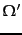 a clustering that further subdivides some clusters in . Show that
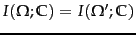.
and 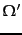 a clustering that further subdivides some clusters in . Show that
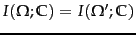.
- Show that
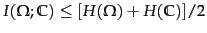.
- Mutual information is symmetric in the sense that its value does not change if the roles of clusters and classes are switched:
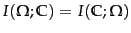. Which of the other three evaluation measures are symmetric in this sense?
- Compute RSS for the two clusterings in Figure 16.7 .
- (i) Give an example of a set of points and three initial centroids (which need not be members of the set of points) for which 3-means converges to a clustering with an empty cluster. (ii) Can a clustering with an empty cluster be the global optimum with respect to RSS?
- Download Reuters-21578. Discard documents that do not occur in one of the 10 classes acquisitions, corn, crude, earn, grain, interest, money-fx, ship, trade, and wheat. Discard documents that occur in two of these 10 classes. (i) Compute a
 -means clustering of this subset into 10 clusters. There are a number of software packages that implement -means, such as WEKA (Witten and Frank, 2005) and R (R Development Core Team, 2005). (ii) Compute purity, normalized mutual information, 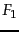 and RI for the clustering with respect to the 10 classes. (iii) Compile a confusion matrix (Table 14.5 , page 14.5 ) for the 10 classes and 10 clusters. Identify classes that give rise to false positives and false negatives.
-means clustering of this subset into 10 clusters. There are a number of software packages that implement -means, such as WEKA (Witten and Frank, 2005) and R (R Development Core Team, 2005). (ii) Compute purity, normalized mutual information, 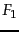 and RI for the clustering with respect to the 10 classes. (iii) Compile a confusion matrix (Table 14.5 , page 14.5 ) for the 10 classes and 10 clusters. Identify classes that give rise to false positives and false negatives.
- Prove that
 is monotonically decreasing in .
is monotonically decreasing in .
- There is a soft version of -means that computes the fractional membership of a document in a cluster as a monotonically decreasing function of the distance
 from its centroid, e.g., as 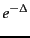. Modify reassignment and recomputation steps of hard -means for this soft version.
from its centroid, e.g., as 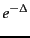. Modify reassignment and recomputation steps of hard -means for this soft version.
- In the last iteration in Table 16.3 , document 6 is in cluster 2 even though it was the initial seed for cluster 1. Why does the document change membership?
- The values of the parameters 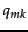 in iteration 25 in Table 16.3 are rounded. What are the exact values that EM will converge to?
- Perform a -means clustering for the documents in Table 16.3 . After how many iterations does -means converge? Compare the result with the EM clustering in Table 16.3 and discuss the differences.
- Modify the expectation and maximization steps of EM for a Gaussian mixture. The maximization step computes the maximum likelihood parameter estimates 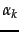, 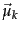, and 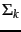 for each of the clusters. The expectation step computes for each vector a soft assignment to clusters (Gaussians) based on their current parameters. Write down the equations for Gaussian mixtures corresponding to and 202 .
- Show that -means can be viewed as the limiting case of EM for Gaussian mixtures if variance is very small and all covariances are 0.
- The within-point scatter of a clustering is defined as
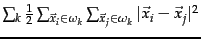. Show that minimizing RSS and minimizing within-point scatter are equivalent.
- Derive an AIC criterion for the multivariate Bernoulli mixture model from Equation 196.
Next:
Hierarchical clustering
Up:
Flat clustering
Previous:
References and further reading
Contents
Index
© 2008 Cambridge University Press
This is an automatically generated page. In case of formatting errors you may want to look at the PDF edition of the book.
2009-04-07